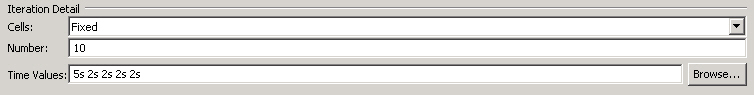

You create MPS message content using XDIME markup and the MCS Layout editor.
Caution: MPS does not support the use of XDIME 2 content.
The message element defines an MPS message, which applies only to MPS. A message consists of a single canvas element that is displayed when the message is read by its recipient.
In the example the canvas element uses the layoutName attribute to identify a layout, created in the Layout editor, with the value 'message'.
A series of temporal iterator panes group text/image pairs. The pane references are qualified by the index values for a temporal iterator, starting from 0. Two methods of referencing are shown.
First a paragraph element with a pane attribute contains some titling. Then follow text/image pairs, logically grouped inside the pane with the name containing the reference. The first image to be used is identified by the img element src attribute value "/welcome/vol_logo.mimg", which is a reference to an image component named 'vol_logo.mimg' in the folder 'welcome'.
<?xml version="1.0" encoding="UTF-8"?>
<message>
<canvas layoutName="/welcome.mlyt" pageTitle="message">
<p pane="background">Hello World!!!</p>
<pane name="logo">
<img src="/welcome/vol_logo.mimg" alt="Volantis Systems Ltd. Logo"/>
</pane>
</canvas>
</message>
Timing values for the temporal iterator can be set in the layout, and the indexed panes can be made to appear at the specified intervals.

Related topics
About MPS